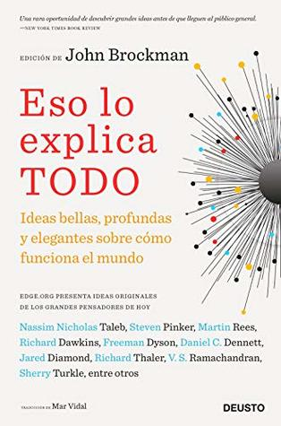

Eso lo explica todo (Spanish Edition)
Reseña por Jorge I. Zuluaga

Ver reseña en GoodReads (necesita cuenta)
Eso es este libro: un compendio de más de 150 ideas geniales reunidas en más de 400 páginas.
Desde la evolución por selección natural (que es considerada por varios de los autores de este bello libro como la idea más bella y elegante de la historia), hasta la ley de Zipf (una misteriosa regularidad estadística que ocurre en los números asociados con fenómenos muy complejos —el número de habitantes de un país, la riqueza de un individuo o corporación, el área de un continente, etc.—), pasando por ideas muy populares e igualmente grandiosas: la navaja de Ockham, el mecanismo de Higgs, la ley de Moore, la epigenética, el dilema de Collingridge (del que estamos sufriendo hoy con las redes sociales), la emergencia en sistemas complejos, los límites de la intuición, el empirismo, el origen estelar de la materia y más, mucho más.
Lo que más me ha gustado: la brevedad con la que se expone cada idea.
Los ensayos cortos, preparados por personajes que van desde premios Nobel (Frank Wilczek, John Mather), hasta celebridades científicas como Sean Carroll, Richard Dawkins, Lawrence Krauss, Daniel Dennett, Steven Pinker, Lisa Randall o escritores, dramaturgos y actores (Alan Alda), cubren espacios que van desde una simple palabra (¿adivinan cuál puede ser el tema?) hasta, a lo sumo, 3 páginas. Todas bellamente escritas (algunas, incluso, con un estilo literario exquisito).
¿Podría ser de otra manera? ¡Por supuesto que no!
Si se trata de hablar de las ideas más elegantes y bellas de la historia, no puedes escribir 500 páginas sobre ellas. Eso es justamente lo que logran los autores de estos ensayos: transmitir a través del ejemplo la idea misma de elegancia, sencillez y belleza que caracteriza muchas de esas ideas.
El libro es ideal para todos los entusiastas de la ciencia.
Si no te gustan las neurociencias o la psicología, disfrutarás como niñ@ de las más bellas ideas de la física o la cosmología; si tampoco es la física lo que te apasiona, tal vez encontrarás un gran placer leyendo sobre las ideas más bellas en el mundo de la informática o las neurociencias; pero si lo suyo es la economía o la sociología, aquí también encontrará expuestas algunas de las más bellas ideas en esas disciplinas. Hay lecturas para todos.
Aquí mis ideas favoritas (por si están cortos de tiempo y solo quieren saltar de aquí para allá):
- La evolución (Blackmore)
- Einstein explica por qué la gravedad es universal (Smolin)
- Los copos de nieve y el multiverso (Rees)
- ¿Por qué es comprensible nuestro mundo? (Linde)
- Kepler et al. y el problema inexistente (Segré) ¡fantástico!
- Por qué la mente tiene una explicación (Humphrey)
- Por qué hay tortugas marinas que emigran (Dennett)
- El conflicto sexual (Buss)
- El principio del palomar (Kleinberg)
- El dilema de Collingridge (Morozov)
- La selección natural es simple pero los sistemas son complejos (Nesse)
- El origen del dinero (Evans)
- Cómo adquirió manchas el leopardo (Abesman)
- Por qué los griegos pintaban a gente roja en vasijas negras (Taylor)
Es una escueta selección que no hace justicia a las decenas de ideas bellas e inspiradoras en este libro.
De verdad aprendí cosas fantásticas. ¡No dejen de leerlo!